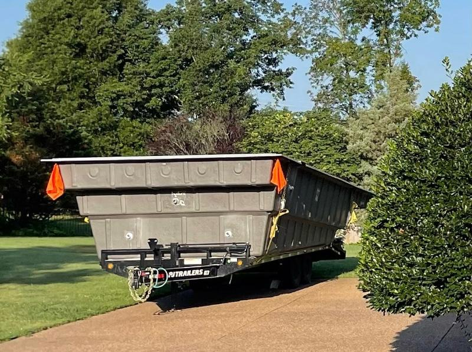
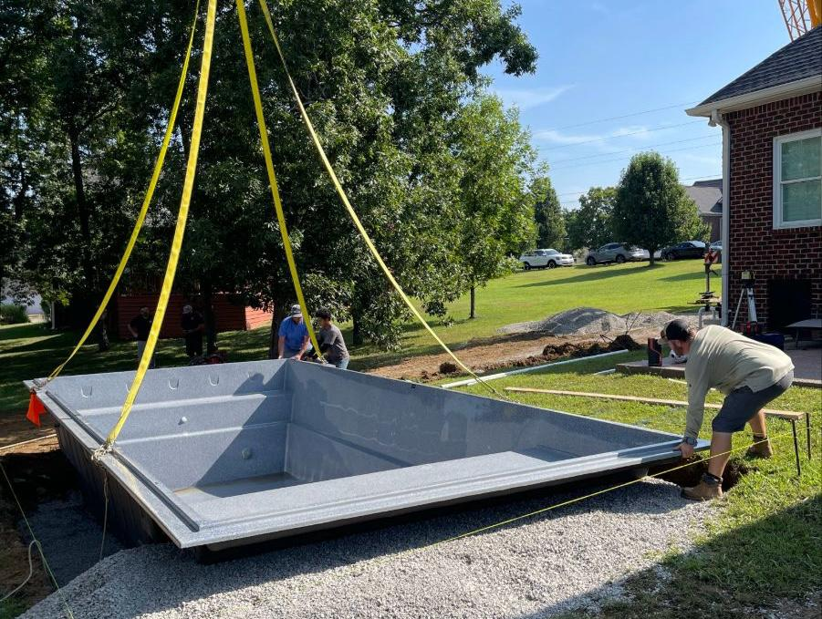
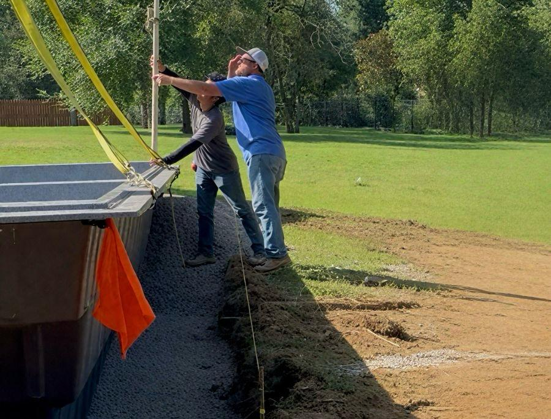
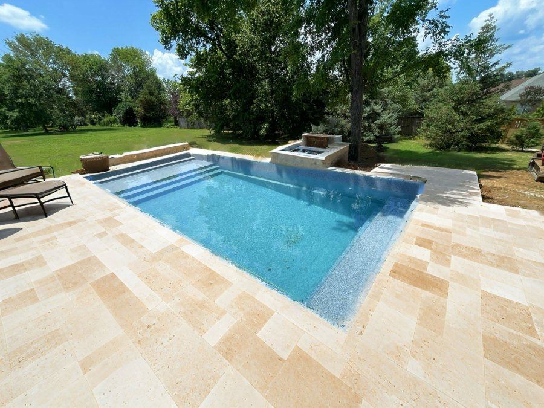

Processo de Instalação
A instalação de uma piscina segue um processo técnico rigoroso, pensado para garantir resistência, segurança e acabamento impecável. Cada etapa é realizada com equipamentos adequados e profissionais treinados. Veja abaixo o passo a passo completo da instalação da sua Piscina Aqua!.

1. CHEGADA E PREPARAÇÃO DO LOCAL
A piscina chega totalmente moldada e pronta para instalação, transportada com segurança por caminhão munck ou guincho. O revendedor autorizado Fiber confere o acesso, as medidas e o local onde a piscina será instalada, garantindo que tudo esteja conforme o projeto.

2. ESCAVAÇÃO E BASE DE CONCRETO
Após a marcação da área, é feita a escavação seguindo as dimensões exatas do modelo. O fundo é nivelado e recebe uma base de concreto armado, que proporciona sustentação perfeita e evita recalques ao longo do tempo.

3. POSICIONAMENTO
A piscina chega totalmente moldada e pronta para instalação, transportada com segurança por caminhão munck ou guincho. O revendedor autorizado Fiber confere o acesso, as medidas e o local onde a piscina será instalada, garantindo que tudo esteja conforme o projeto.

4. NIVELAMENTO E ENCHIMENTO
Após a marcação da área, é feita a escavação seguindo as dimensões exatas do modelo. O fundo é nivelado e recebe uma base de concreto armado, que proporciona sustentação perfeita e evita recalques ao longo do tempo.

5. INSTALAÇÃO HIDRÁULICA
A piscina chega totalmente moldada e pronta para instalação, transportada com segurança por caminhão munck ou guincho. O revendedor autorizado Fiber confere o acesso, as medidas e o local onde a piscina será instalada, garantindo que tudo esteja conforme o projeto.

6. ACABAMENTO TÉCNICO
Após a marcação da área, é feita a escavação seguindo as dimensões exatas do modelo. O fundo é nivelado e recebe uma base de concreto armado, que proporciona sustentação perfeita e evita recalques ao longo do tempo.

7. ENCHIMENTO E COMPACTAÇÃO
A piscina chega totalmente moldada e pronta para instalação, transportada com segurança por caminhão munck ou guincho. O revendedor autorizado Fiber confere o acesso, as medidas e o local onde a piscina será instalada, garantindo que tudo esteja conforme o projeto.

8. NIVELAMENTO DO ENTORNO
Após a marcação da área, é feita a escavação seguindo as dimensões exatas do modelo. O fundo é nivelado e recebe uma base de concreto armado, que proporciona sustentação perfeita e evita recalques ao longo do tempo.

9. ACABAMENTO FINAL
A piscina chega totalmente moldada e pronta para instalação, transportada com segurança por caminhão munck ou guincho. O revendedor autorizado Fiber confere o acesso, as medidas e o local onde a piscina será instalada, garantindo que tudo esteja conforme o projeto.